Your teammates' exercise material is below. You should see their fire hydrant or power pole footing photograph and their response. Each AUXC who submitted an image should have at least one image included.
If you hover over an image and it resizes slightly, this indicates that this is not the submitted size. You can click to see the original, full-sized image. Use the browser's back button to return to this check-in listing page from the full-sized image.
If latitude and longitude were included, I've linked to a map to show the power pole footing or the hydrant reported on.
All other simple check-ins have been recorded, so if you do not see your check-in sentence - rest assured: I have it and it has been added to the roster list for week 174.
Your exercise requirements this week were to:
Note that if an AUXC checked in through multiple RMSs, then each check-in sentence is provided at the top of their information.
Jump to a specific AUXC's check-in material:
174, AD7EF, VARA FM, KD7ZDO-11, 145.770, Oregon City, Clackamas, Oregon
174, AD7EF, Packet, KI7BDP-10, 50.700, Oregon City, Clackamas, Oregon
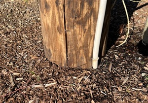
The attached photograph shows the base of an Oregon City utility pole located on the north side of Holcomb Blvd, approximately 200 feet east of the Holcomb Blvd intersection with Oaktree Terrace.
Based on Oregon City GIS mapping resources, the coordinates for this utility pole are 45.37195, -122.56352.
This is a dead-end utility pole, where the overhead sub-transmission service coming from the west, along the north side of Holcomb Blvd, transitions to below ground, at the south-west corner of the new Serres Farm housing development.
Original image size: 449 x 313 pixels, 96 dpi, 102.0 kbytes
174, K7QQB, VARA FM, W7OWO-10, 145.030, AURORA, CLACKAMAS, OREGON
174, K7QQB, PACKET, W7OWO-10, 145.030, AURORA, CLACKAMAS, OREGON
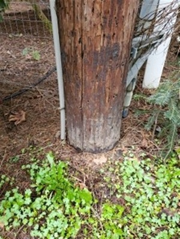
Power pole is located on Becke Rd, 45.29052, -122.73552.
Original image size: 409 x 545 pixels, 96 dpi, 83.7 kbytes
174, K7VBY, VARA FM, KD7ZDO-11, 145.770, OAK GROVE, CLACKAMAS, OREGON
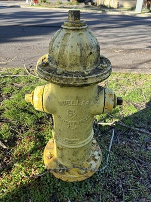
Hydrant Information:
Original image size: 302 x 403 pixels, 96 dpi, 77.7 kbytes
174, KD7DNM, VARA FM, KD7ZDO-11, 145.770, Lake Oswego, Clackamas, OR
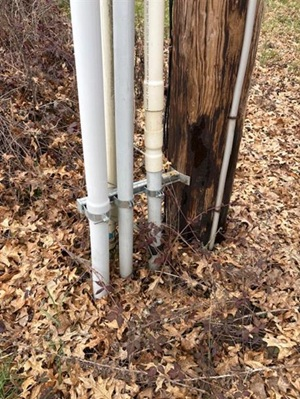
Utility pole near 3210 Childs Road Lake Oswego , OR (On private road named River Bend Lane
Location; 45.38463, -122.71032
Utility pole has the following numbers: --Ziply 80374, PGE D21-20 4739 1952
Original image size: 457 x 609 pixels, 96 dpi, 83.6 kbytes
174, KE7WNB, VARA FM, KD7ZDO-11, 145,770, Milwaukie, Clackamas, Oregon
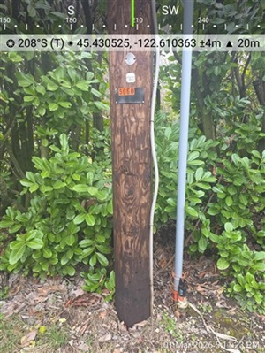
Location: 45.43053, -122.61036
Powerpole at 5060 SE Lake Rd
Original image size: 338 x 450 pixels, 96 dpi, 78.4 kbytes
174, KF7KXX, VARA FM, W7BVT-10, 145.020, Lake Oswego, Clackamas, Oregon
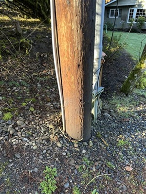
location of power pole: latitude: 45.39973, longitude: -122.70029
Original image size: 321 x 428 pixels, 96 dpi, 96.4 kbytes
174, KI7DGC, VARA FM, W7BVT-10, 145.020, Lake Oswego, Clackamas, Oregon
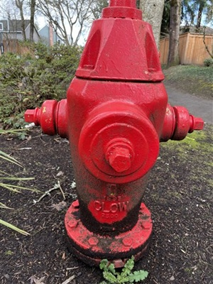
Hydrant Information:
Original image size: 377 x 503 pixels, 96 dpi, 109.9 kbytes
174, KI7MDE, VARA FM, N1ACW-10, 145.530, Tualatin, Clackamas, OR
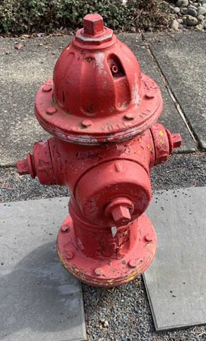
Hydrant Information:
Original image size: 470 x 778 pixels, 72 dpi, 146.7 kbytes
174, KI7QIB, VARA FM, K7MCE-10, 145.070, Portland, Multnomah, Oregon
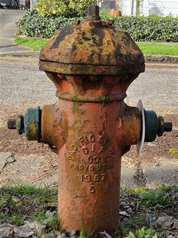
Hydrant Information:
Original image size: 372 x 497 pixels, 96 dpi, 109.9 kbytes
174, KJ7JCR, VARA FM, N7TRY-10, 441.500, Lake Oswego, Clackamas, Oregon
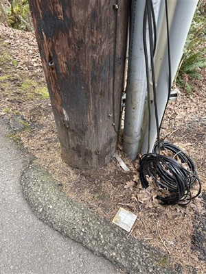
Utility pole is located at: 45.40028, -122.70721
This pole carries PGE electrical wires, Qwest POTS wire lines, Comcast cable coax.
Original image size: 449 x 599 pixels, 96 dpi, 83.4 kbytes
174, KK6OTP, VARA FM, KD7ZDO-11, 145.770, Wilsonville, Clackamas, OR
174, KK6OTP, Packet, N1ACW-10, 145.530, Wilsonville, Clackamas, OR
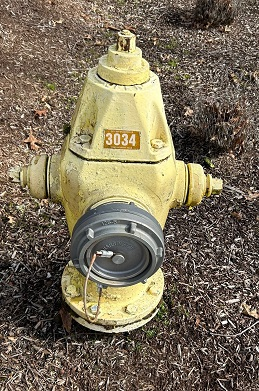
WV PW Hydrant #3034
Original image size: 259 x 391 pixels, 72 dpi, 84.0 kbytes
174, KK7MLS, VARA FM, W7BVT-10, 145.020, Lake Oswego, Clackamas, Oregon
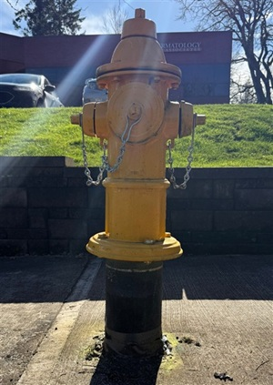
- Fire Hydrant (image attached)
Original image size: 426 x 601 pixels, 96 dpi, 105.1 kbytes
174, WW7OR, VARA FM, N1ACW-10, 145.530, Lake Oswego, Clackamas, Oregon
174, WW7OR, VARA FM, W7BVT-10, 145.020, Lake Oswego, Clackamas, Oregon
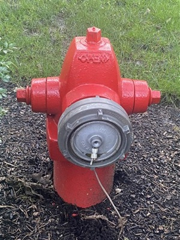
Hydrant Information:
Original image size: 337 x 449 pixels, 96 dpi, 100.0 kbytes
174, W6RKT, VARA FM, K7LSC-10, 144.960, Battle Ground, Clark, WA
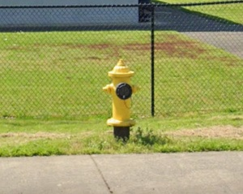
Hydrant is located at: 45.78265, -122.53744
This is on the east side of Battle Ground High School. The manufacturer is Mueller. Unable to identify any source for the main size that is publicly available. Unfortunately, many water agencies in this region do not use the NFPA guidance on painting the bonnet a specified color based on the main size to make it readily apparent. :(
Original image size: 595 x 475 pixels, 96 dpi, 79.0 kbytes
174, W7TEE, VARA FM, KD7ZDO-12, 441.525, Clarkes, Clackamas, Oregon
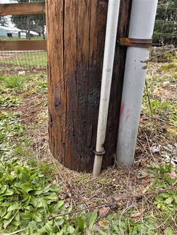
Power pole at S. Brooks Ln, Clarkes, OR
Location: 45.22007, -122.45824
Original image size: 440 x 586 pixels, 96 dpi, 78.1 kbytes
174, WA6ZLV, VARA FM, N1ACW-10, 145.530, Lake Oswego, Clackamas, Oregon
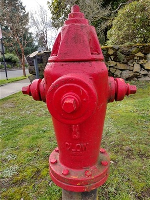
Hydrant Information:
Original image size: 353 x 471 pixels, 96 dpi, 78.0 kbytes
174, N1ACW/M, VARA FM, W7OWO-10, 145.030, Barlow, Clackamas, Oregon
174, N1ACW/M, Telnet, STARLINK, 0.000, Barlow, Clackamas, Oregon
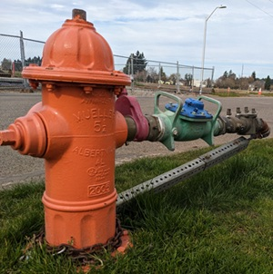
Hydrant Information:
Original image size: 400 x 403 pixels, 96 dpi, 112.0 kbytes
{kind=link}
{kind=link}
{kind=link}
{kind=link}
{kind=link}
{kind=link}
{kind=link}
{kind=link}
{kind=link}
{kind=link}
{kind=link}
{kind=link}
{kind=link}
{kind=link}
{kind=link}
{kind=link}
{kind=link}